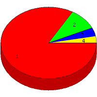

Week of 7/4/2010 to 7/10/2010: Top
4 of
4 File Types (Extensions)
Sorted by Access Count
Individual file types as determined by file extensions. All URLs that
do not contain an extension are counted as directories.

| Rank |
Type |
Accesses |
% |
Bytes |
% |
| 1 |
html
|
339 |
83.50 |
8,228,745 |
95.57 |
| 2 |
Directory (folder)
|
39 |
9.61 |
221,208 |
2.57 |
| 3 |
htm
|
16 |
3.94 |
145,161 |
1.69 |
| 4 |
ico
|
12 |
2.96 |
15,466 |
0.18 |